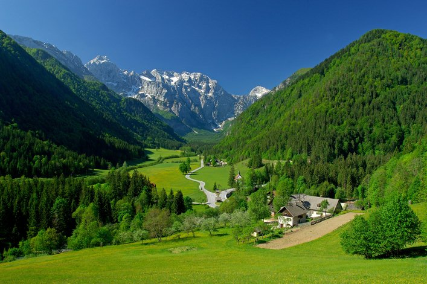
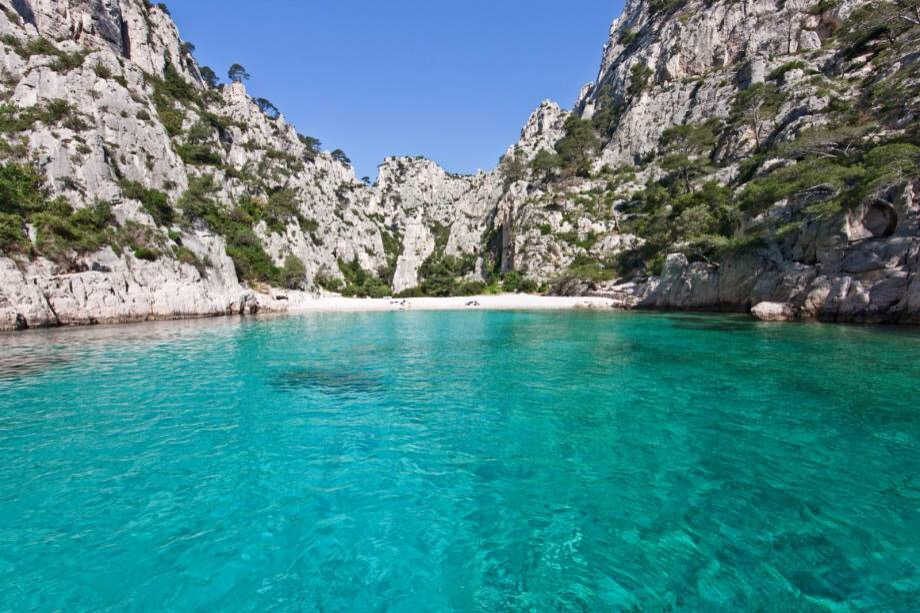

“ Dans le voyage, il n'y a pas de certitude, seulement de l'aventure… ”
PROVENCE
La Provence est une région historique et culturelle ainsi qu'une ancienne province dans le Sud-Est de la France, s'étendant de la rive gauche du Rhône inférieur à l'ouest, jusqu'au fleuve Var à l'est et bordée au sud par la Méditerranée. La Provence fait aujourd'hui partie de la région Provence-Alpes-Côte d'Azur et correspond aux départements des Alpes-de-Haute-Provence, des Bouches-du-Rhône, du Var, du Vaucluse, des Alpes-Maritimes et de la Drôme.
ALPES
Les Pré Alpes ou Alpes du Sud forment la moyenne et la haute Provence : Ventoux, montagne de Lure, préalpes de Digne et de Castellane, plateau de Valensole, plan de Canjuers(coupé des gorges du Verdon), plan de Caussols. Plus au sud se trouvent les reliefs du Luberon, des Alpilles, de la montagne Sainte-Victoire et de la Sainte-Baume. À l'est, les Préalpes s'achèvent près de la mer, vers Nice et Menton. La région comprend plusieurs zones de moyenne et haute montagne : le Mercantour à l'est, avec son point culminant à 3 143 m : la Cime du Gélas, le massif des Ecrins au nord qui culmine à plus de 4 000 m d'altitude (Barre des Écrins à 4 102 m, Pelvoux à 3 946 m), et les massifs moins étendus du Dévoluy, du Queyras et des Cerces.
CÔTE-D'AZUR
La Côte d'Azur se situe au Sud de la France, elle s'étend sur les départements du Var et des Alpes-Maritimes. La Côte d'Azur cumule plusieurs avantages qui tous favorisent le tourisme. D'abord un climat exceptionnel, le soleil est là de nombreux jours de l'année et la température est remarquablement douce en hiver. Ensuite la présence simultanée de la mer, la Méditerranée, et de montagnes, les Alpes.
